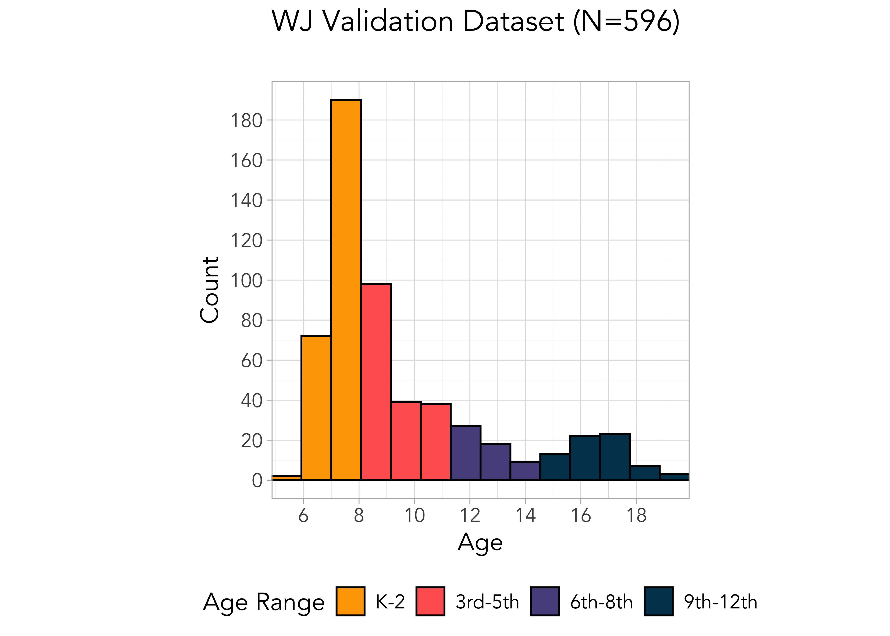

{kind=link}
{kind=link}
| N | % | % Missing | |
|---|---|---|---|
| Female | 185 | 45.45 | 7.13 |
| Free or Reduced Lunch | 51 | 12.53 | 84.77 |
| Race/Ethnicity | |||
| Hispanic Ethnicity | 42 | 10.32 | 0.00 |
| White | 193 | 47.42 | 0.00 |
| Black or African American | 22 | 5.41 | 0.00 |
| Asian | 89 | 21.87 | 0.00 |
| American Indian or Alaska Native | 5 | 1.23 | 0.00 |
| Hawaiian or Other Pacific Islander | 2 | 0.49 | 0.00 |
| Multiracial | 51 | 12.53 | 0.00 |
| Total | 407 | ||
22 Single Word Recognition (ROAR-Word) Concurrent Validity
ROAR-Word is designed to measure the latent construct of single word reading. Traditionally, single word reading is measured by having children read lists of real words and pseudo words of increasing complexity and scoring them based on their accuracy of pronunciation. Thus we first establish that the silent, lexical decision task in ROAR-Word taps into the same latent construct by comparing ROAR-Word scores to a variety of other standardized measures of single word reading (Section 22.1). After establishing convergent validity with carefully selected criterion measures, we next establish divergent validity from measures of receptive vocabulary (?sec-divergent-validity-swr). Finally, since single word reading is the foundation upon which reading fluency and comprehension is built, we also examine how well ROAR-Word scores predict more distal reading measures (?sec-validity-with-distal-measures-swr).
22.1 Convergent validity with oral measures of single word reading
22.1.1 Woodock Johnson Basic Reading Skills
22.1.1.1 Background: Published studies
In an initial proof-of-concept study we compared proportion correct on a pilot version of ROAR-Word to individually administered Woodcock-Johnson Letter Word Identification (WJ-Word-ID) scores and found an exceptionally high correlation (r = 0.91, disattenuated r = 0.94; (Yeatman et al. 2021); Figure 22.1). Moderation analysis confirmed that ROAR-Word is equally valid for children with dyslexia and typical readers (6-18 years of age). Different measures of single word reading, such as the Woodcock-Johnson (WJ) and Test of Word Reading Efficiency (TOWRE), are highly correlated, and a variety of standardized measures largely tap into the same latent construct. For example, it is common to use a threshold on WJ or TOWRE to group research participants into dyslexic versus control groups (Fletcher et al. 2006). The correlation between timed, untimed, real word, and pseudoword reading measures across these assessments ranged from r = 0.72 to 0.93; ROAR-Word is similarly correlated with each measure (Figure 22.1). Thus, in terms of convergent validity, ROAR-Word is highly correlated with myriad measures that are often used interchangeably in reading and dyslexia research.
In a second proof-of-concept study we optimized the measurement scale with IRT, added additional items tailored to younger participants, and deployed a new version of ROAR-Word that was half the length. Data from kindergarten, first, and second grade students revealed an exceptionally high correlation of r=0.97 between ROAR-Word and WJ-Word-ID (Figure 22.2) (Yeatman et al. 2021).
22.1.1.2 Additional validation against Woodcock Johnson Basic Reading Skills
The initial validation studies published in (Yeatman et al. 2021) provided strong initial evidence that ROAR-Word accurately tapped into the construct of single word reading ability. However, the sample published in (Yeatman et al. 2021) was recruited to participate in research studies in the Yeatman Lab and was not, therefore, representative of the diversity of students in the United States. Hence we undertook a series of additional validation studies in collaboration with school districts that had adopted ROAR. Figure 22.3 shows the age distribution and Table 22.1 shows the demographics of the students that participated in these validation studies.

Figure 22.4 shows the relationship between ROAR-Word raw scores and Woodock Johnson Letter Word Identification (WJ LWID) assessed at the same time point and Figure 22.5 shows this relationship broken down by grade. The strongest relationships are in early elementary school but that is because single word reading is at ceiling by late elementary school for most students. Table 22.2 reports the correlations separately for each grade.
When comparing the correlation between ROAR-Word scores and individually administered Woodcock Johnson (WJ) assessments, the correlation is strongest in early elementary school and decreases in middle school and high-school (Table 22.2). But this decrease in correlation is likely driven by the fact that most middle school and high school students are at ceiling in single word reading restricting the range of WJ scores. We used the correlation between the two WJ subtests (Word Identification and Word Attack) as a reliability estimate for WJ subtest scores in each age range and found, as expected, that a decrease in reliability of the WJ explained the lower correlation between ROAR and WJ in the older grades. Table 22.3 shows disattenuated correlations that correct for differences in reliability in each sample.
| Grade | Word ID | Word Attack | Basic Reading Skills | WJ Reliability | N |
|---|---|---|---|---|---|
| 1 | 0.81 | 0.81 | 0.81 | 0.84 | 43 |
| 2 | 0.87 | 0.87 | 0.88 | 0.82 | 48 |
| 3 | 0.77 | 0.77 | 0.77 | 0.82 | 226 |
| 4 | 0.72 | 0.72 | 0.71 | 0.88 | 68 |
| 5 | 0.69 | 0.69 | 0.62 | 0.85 | 48 |
| 6-8 | 0.64 | 0.64 | 0.63 | 0.78 | 83 |
| 9-12 | 0.53 | 0.53 | 0.59 | 0.65 | 76 |
| Grade | Word ID | Word Attack | N |
|---|---|---|---|
| 1 | 0.92 | 0.92 | 43 |
| 2 | 0.99 | 0.99 | 48 |
| 3 | 0.88 | 0.88 | 226 |
| 4 | 0.79 | 0.79 | 68 |
| 5 | 0.77 | 0.77 | 48 |
| 6-8 | 0.75 | 0.75 | 83 |
| 9-12 | 0.69 | 0.69 | 76 |
Figure 22.6 shows concurrent validity data comparing ROAR-Word and WJ split by demographic groups. The relationship between ROAR-Word and WJ is similar across different demographics.
22.1.2 Fastbridge
22.1.2.1 Background: Published studies
The Formative Assessment System for Teachers (FAST) from FastBridge Learning, is a screener and curriculum based measure widely used across many schools in the United States. In a published validation study of the new, shortened computer adaptive version of ROAR-Word which is now the current standard of practice (ROAR-CAT), we compared the \(\theta\) estimates from ROAR-Word against the individually-admininstered FAST™ earlyReading measure and found a correlation of r=0.89 in 1st grade and r=0.73 in 2nd grade. This initial published study was a small sample size but provided strong evidence of construct validity for the new computer adaptive measure. Figure 22.7 reproduces Figure 10 from Ma et al. (2023) which shows convergent validity of the shortened CAT version of ROAR-Word with FastBridge and Fountas & Pinnell. The following sections undertake similar analyses with a much larger sample including multiple school districts
{kind=link}
22.1.2.2 Additional validation against Fastbridge
In collaboration with two large and diverse school districts in the State of California, we ran a study of concurrent validity to compare ROAR against FastBridge. Table 22.4 shows the demographics of the sample.
| N | % | % Missing | |
|---|---|---|---|
| Female | 1692 | 50.24 | 0.65 |
| Free or Reduced Lunch | 520 | 15.44 | 11.13 |
| English Learner | 494 | 14.67 | 11.13 |
| Special Education Status | 113 | 3.36 | 11.07 |
| Race/Ethnicity | |||
| Hispanic Ethnicity | 703 | 20.87 | 0.03 |
| White | 1210 | 35.93 | 0.03 |
| Black or African American | 76 | 2.26 | 0.03 |
| Asian | 927 | 27.52 | 0.03 |
| American Indian or Alaska Native | 20 | 0.59 | 0.03 |
| Hawaiian or Other Pacific Islander | 18 | 0.53 | 0.03 |
| Multiracial | 540 | 16.03 | 0.03 |
| Total | 3368 | ||
We compared ROAR-Word scores against following FastBridge measures administered within a month (concurrent validity):
- FastBridge Curriculum Based Measurement for Reading (FAST™ CBMreading) is an Oral Reading Fluency (ORF) measure where students read a leveled passage out loud for one minute. The FastBridge technical manual states “CBMreading is a simple, efficient, evidence-based assessment used for universal screening in grades 1 through 8, and progress monitoring for grades 1-12”(Christ and Colleagues 2018, 14). Words Read Correct, or WRC, “is the primary metric used in reporting student performance on FAST™ CBMreading” (Christ and Colleagues 2018, 19). This measure includes scores on three separate passages as well as a composite score.
- FAST™ earlyReading is designed to measure component skills of reading if kindergarten and first grade (Christ and Colleagues 2018, 30). It includes Sight Word (real word list) and Nonsense Word (pseudoword list) decoding measures.
Figure 22.8 shows the relationship between FAST™ CBMreading, FAST™ earlyReading and ROAR-Word scores. Table 22.5 reports the Pearson correlations between each measure. Correlations between all the measures were exceptionally high and the correlation between ROAR-Word and FastBridge was almost as high as the internal consistency of FastBridge measures.
| ROAR-Word | ORF Passage 1 | ORF Passage 2 | ORF Passage 3 | ORF Composite | Nonsense Words | Sight Words | earlyReading Composite | |
|---|---|---|---|---|---|---|---|---|
| ROAR-Word | 1.00 | 0.82 | 0.82 | 0.82 | 0.83 | 0.75 | 0.78 | 0.76 |
| ORF Passage 1 | 0.82 | 1.00 | 0.96 | 0.96 | 0.98 | 0.86 | 0.87 | 0.90 |
| ORF Passage 2 | 0.82 | 0.96 | 1.00 | 0.96 | 0.99 | 0.84 | 0.87 | 0.90 |
| ORF Passage 3 | 0.82 | 0.96 | 0.96 | 1.00 | 0.98 | 0.84 | 0.87 | 0.91 |
| ORF Composite | 0.83 | 0.98 | 0.99 | 0.98 | 1.00 | 0.85 | 0.87 | 0.91 |
| Nonsense Words | 0.75 | 0.86 | 0.84 | 0.84 | 0.85 | 1.00 | 0.81 | 0.86 |
| Sight Words | 0.78 | 0.87 | 0.87 | 0.87 | 0.87 | 0.81 | 1.00 | 0.85 |
| earlyReading Composite | 0.76 | 0.90 | 0.90 | 0.91 | 0.91 | 0.86 | 0.85 | 1.00 |
Table 22.6 Shows the correlation between FAST™ earlyReading ROAR-Word in kindergarten (ORF is not typically administered until first grade). Table 22.7 shows the correlations for first grade and, Table 22.8 shows the correlations for second grade.
| ROAR-Word | Nonsense Words | Sight Words | earlyReading Composite | |
|---|---|---|---|---|
| ROAR-Word | 1.00 | 0.60 | 0.63 | 0.58 |
| Nonsense Words | 0.60 | 1.00 | 0.81 | 0.90 |
| Sight Words | 0.63 | 0.81 | 1.00 | 0.90 |
| earlyReading Composite | 0.58 | 0.90 | 0.90 | 1.00 |
| ROAR-Word | ORF Passage 1 | ORF Passage 2 | ORF Passage 3 | ORF Composite | Nonsense Words | Sight Words | earlyReading Composite | |
|---|---|---|---|---|---|---|---|---|
| ROAR-Word | 1.00 | 0.81 | 0.83 | 0.82 | 0.83 | 0.73 | 0.77 | 0.79 |
| ORF Passage 1 | 0.81 | 1.00 | 0.96 | 0.96 | 0.98 | 0.86 | 0.87 | 0.90 |
| ORF Passage 2 | 0.83 | 0.96 | 1.00 | 0.97 | 0.99 | 0.84 | 0.87 | 0.90 |
| ORF Passage 3 | 0.82 | 0.96 | 0.97 | 1.00 | 0.99 | 0.84 | 0.87 | 0.91 |
| ORF Composite | 0.83 | 0.98 | 0.99 | 0.99 | 1.00 | 0.85 | 0.87 | 0.91 |
| Nonsense Words | 0.73 | 0.86 | 0.84 | 0.84 | 0.85 | 1.00 | 0.79 | 0.87 |
| Sight Words | 0.77 | 0.87 | 0.87 | 0.87 | 0.87 | 0.79 | 1.00 | 0.87 |
| earlyReading Composite | 0.79 | 0.90 | 0.90 | 0.91 | 0.91 | 0.87 | 0.87 | 1.00 |
| ROAR-Word | ORF Passage 1 | ORF Passage 2 | ORF Passage 3 | ORF Composite | earlyReading Composite | |
|---|---|---|---|---|---|---|
| ROAR-Word | 1.00 | 0.80 | 0.79 | 0.78 | 0.80 | NA |
| ORF Passage 1 | 0.80 | 1.00 | 0.95 | 0.95 | 0.98 | NA |
| ORF Passage 2 | 0.79 | 0.95 | 1.00 | 0.95 | 0.98 | NA |
| ORF Passage 3 | 0.78 | 0.95 | 0.95 | 1.00 | 0.98 | NA |
| ORF Composite | 0.80 | 0.98 | 0.98 | 0.98 | 1.00 | NA |
| earlyReading Composite | NA | NA | NA | NA | NA | NA |